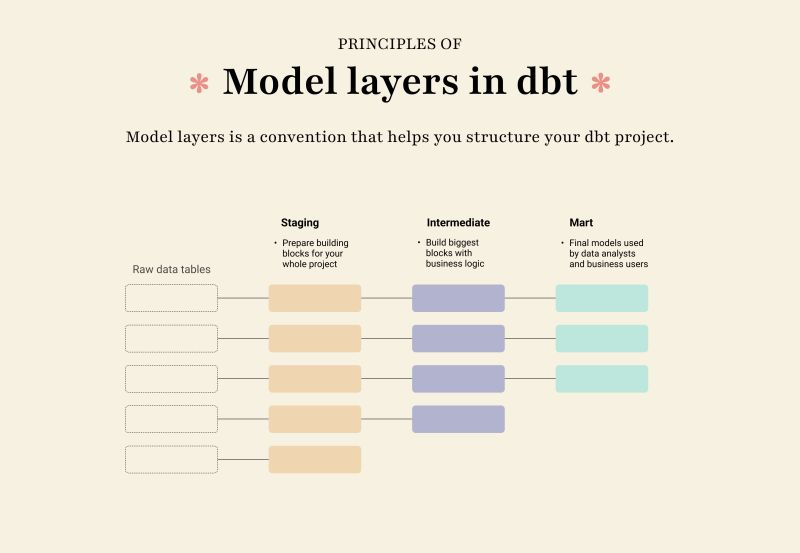

You’ve got three staging models — stg__customers, stg__orders, stg__payments. Next exercise builds the fact table that joins them: fct_orders. Before that, there’s a piece of work that doesn’t fit cleanly in either layer: rolling payments up to one row per order.
That work belongs in a third model layer: intermediate.

An intermediate (int_*) model is a transformation that:
In our case: aggregating stg__payments (113 rows, one per payment) into one row per order_id is exactly that — it’s not what an analyst queries, but it’s the thing fct_orders joins to. Without an intermediate, you’d inline the aggregation as a CTE inside fct_orders.sql — fine for one consumer, painful when a second one shows up.
Inside models/intermediate/ — a peer of models/staging/ and models/marts/, not nested under either. The folder layout mirrors the DAG: data flows top-to-bottom from sources → staging → intermediate → marts, and the directory tree reads the same way.
marts/intermediate/ would put work-in-progress next to the production-facing facts and dims.dbt_project.yml (staging: view, intermediate: view, marts: table) so you can change one without affecting another.The other common convention is
models/marts/intermediate/nested under marts. You’ll see it in older dbt projects. Modern dbt-labs reference projects use the peer layout, so we do too.
The walkthrough below has the full SQL for models/intermediate/int_order_payments.sql. The shape is small but every piece earns its place:
{{ ref('stg__payments') }} — depends on the staging model, not the source. Intermediates always sit downstream of staging.group by order_id — collapses 113 payment rows down to 99 rows, one per order.sum(amount) + count(*) — two aggregates the fact will want: the dollar total per order, and how many payment events that total represents.The result schema: (order_id, total_amount, payment_count). Three columns, ~99 rows.
It could. fct_orders.sql could include this as a CTE:
with payments_by_order as (
select order_id, sum(amount) as total_amount, count(*) as payment_count
from {{ ref('stg__payments') }}
group by order_id
)
select … from {{ ref('stg__orders') }} o
left join payments_by_order p on p.order_id = o.order_id
For a single consumer, the CTE is shorter. The case for promoting it to an intermediate model is everything that comes after the first consumer:
fct_customer_lifetime_value also wants total spend per order. With a CTE, you copy-paste; with int_order_payments, you ref() it. Two queries, same definition, no drift.unique, not_null) attach to a model, not to a CTE. If order_id should be unique in the rolled-up payments, that test belongs on int_order_payments.fct_orders.sql is 200 lines, you want it to look like joins, not aggregations. The intermediate gives you a clean noun (“payments rolled up by order”) that the fact’s from block reads naturally.The rule of thumb: promote to an intermediate the second time you’d reach for the same CTE, not the first.
from {{ source('stripe', 'raw_payments') }} works but skips the cents→dollars cast you put in stg__payments. Always go through staging.group by. Without it the model returns one row per payment with sum() over the whole table — DuckDB will error or produce nonsense depending on the column list.int_payments. Naming should describe what the model is about, not just where it sits. int_order_payments says “payments rolled up to the order grain”; int_payments is ambiguous (rolled up by what?).Press n to start the exercise.
1. From the repo root, create the intermediate folder (peer of staging/ and marts/, not nested under either) and the new model file:
mkdir -p dbt_project/models/intermediate
touch dbt_project/models/intermediate/int_order_payments.sql
2. Paste this into int_order_payments.sql:
select
order_id,
sum(amount) as total_amount,
count(*) as payment_count
from {{ ref('stg__payments') }}
group by order_id
Three things to notice:
{{ ref('stg__payments') }} — intermediates depend on staging via ref(), not on the source. The amount / 100.0 cast you wrote in staging is already applied; you get dollars here, not cents.group by order_id — collapses 113 payment rows to 99 unique-order rows.{{ config(...) }} block at the top. Without an explicit intermediate: entry in dbt_project.yml, the model defaults to view — which is the conventional choice for intermediates: cheap to recompute while you debug, no warehouse storage to babysit.3. Build it:
cd dbt_project
dbt run --select int_order_payments
You should see one green line. dbt automatically rebuilds stg__payments first if it isn’t fresh.
4. Sanity-check the result:
dbt show --select int_order_payments --limit 5
Five rows, three columns, totals look like dollar amounts (e.g. 26.00, not 2600).
duckdb ../database/dev.duckdb -c "select count(*) from int_order_payments"
Should print 99 — one row per distinct order_id from raw_payments.
5. Press v.
dbt run --select int_order_payments exits 0.int_order_payments exists in dev.duckdb.select count(*) from int_order_payments returns 99 — confirming the group by collapsed payments to the order grain.select count(distinct order_id) from int_order_payments also returns 99 — confirming order_id is unique per row.payment_count and total_amount columns are present.| Symptom | Fix |
|---|---|
Compilation Error: Model 'int_order_payments' depends on a node named 'stg__payments' which was not found |
Either you skipped the previous exercise (stg__payments doesn’t exist) or you typed ref('stg_payments') (single underscore). Check the model name in models/staging/. |
Row count is 113 instead of 99 |
Missing group by order_id, or count(*) was applied at the wrong grain. |
total_amount shows huge integer values |
The cents → dollars cast didn’t happen — check that stg__payments has amount / 100.0. The intermediate just sums what staging gives it. |
Binder Error: column "order_id" must appear in the GROUP BY clause |
The select list includes a column that isn’t aggregated and isn’t grouped on. Either group on it or wrap it in min() / max() / sum(). |
Press n. Time to land the fact table — fct_orders will join all three staging models plus this intermediate into the one denormalized table the analyst actually queries.